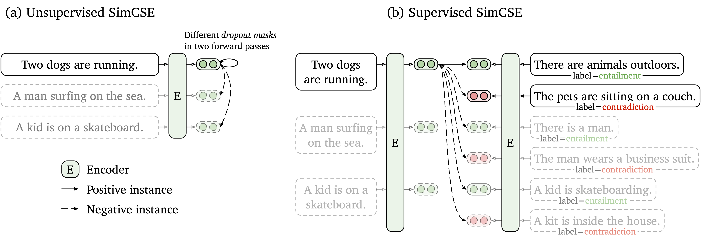
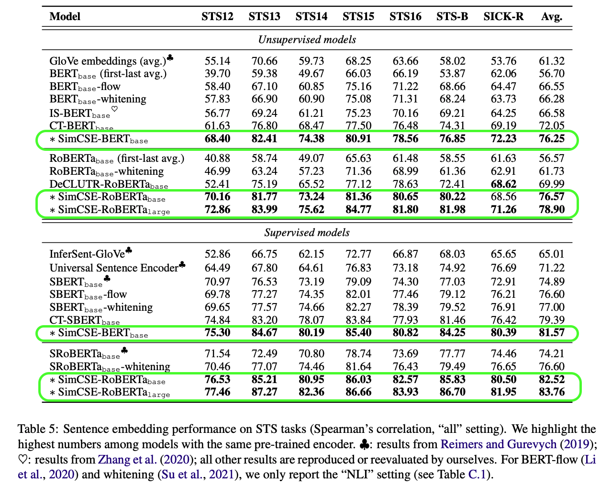

Semantic Similarity
Contents
Semantic Similarity#
NLP Embeddings#
Computers cannot understand human natural language text directly.
Embeddings are numeric vector representations of natural language text so that computers can understand the context and meaning of the text.
For a detailed overview of various state of the art NLP embedding techniques, please take a look at my Medium blog post: Semantic Textual Similarity
SimCSE: Simple Contrastive Learning of Sentence Embeddings#
One large issue with developing domain-specific NLP sentence embeddings for semantic similarity search is the need to curate a lot of pairwise labeled data. To alleviate this problem, the authors propose an Unsupervised technique using plain Dropouts to achieve pretty strong results!
Unsupervised SimCSE takes an input sentence and predicts itself in a contrastive learning framework, with only standard dropout used as noise:
✅ Supports both Unsupervised and Supervised learning of sentence embeddings
✅ State of the art results on both Unsupervised and Supervised sentence embedding generation
✅ Several SOTA pre-trained models provided out of the box
🚀 Github: https://github.com/princeton-nlp/SimCSE
📖 Paper: https://arxiv.org/abs/2104.08821v3
#nlp #machinelearning #datascience #researchpaper #github #semanticsimilarity #vectorsearch #sentencetransformers #unsupervised #deeplearning


Fuzzy String Matching#
# Generate random texts
from faker import Faker
fake = Faker()
fake.seed_instance(0)
fake_text = fake.text(max_nb_chars=200_000).split("\n")
print(fake_text[:3])
['American whole magazine truth stop whose. On traditional measure example sense peace. Would mouth relate own chair.', 'Together range line beyond. First policy daughter need kind miss.', 'Trouble behavior style report size personal partner. During foot that course nothing draw.']
# Imports
from rapidfuzz import process as rapidfuzz_process
from thefuzz import process as thefuzz_process
%%time
thefuzz_process.extract("stock ball organization", choices=fake_text)
CPU times: user 378 ms, sys: 11.8 ms, total: 390 ms
Wall time: 366 ms
[('Security stock ball organization recognize civil. Pm her then nothing increase.',
90),
('Language ball floor meet usually board necessary. Natural sport music white.',
86),
('First degree response able state more. Couple part cup few. Beyond take however ball.',
86),
('Important hope about catch. Style record bag down stock computer watch. Sea stuff no response.',
86),
('Ball appear television so teach energy possible. Student bag grow better. Child might source.',
86)]
%%time
rapidfuzz_process.extract("stock ball organization", choices=fake_text)
CPU times: user 23.5 ms, sys: 0 ns, total: 23.5 ms
Wall time: 23.3 ms
[('Security stock ball organization recognize civil. Pm her then nothing increase.',
90.0,
10),
('Language ball floor meet usually board necessary. Natural sport music white.',
85.5,
3),
('First degree response able state more. Couple part cup few. Beyond take however ball.',
85.5,
12),
('Important hope about catch. Style record bag down stock computer watch. Sea stuff no response.',
85.5,
54),
('Ball appear television so teach energy possible. Student bag grow better. Child might source.',
85.5,
74)]